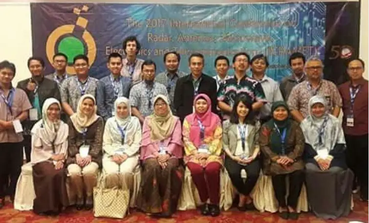
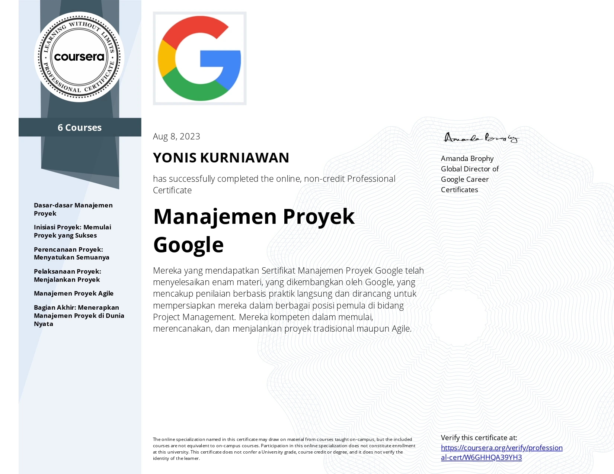
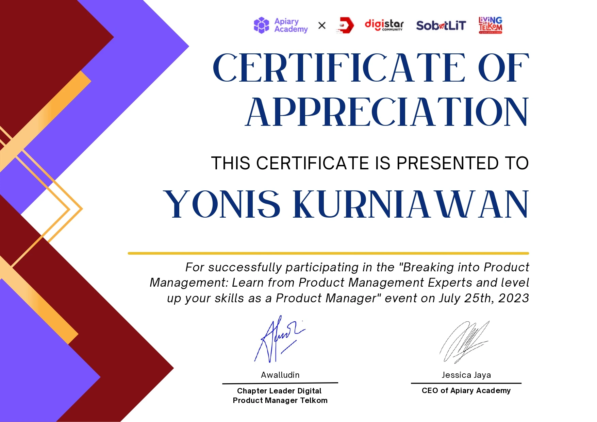
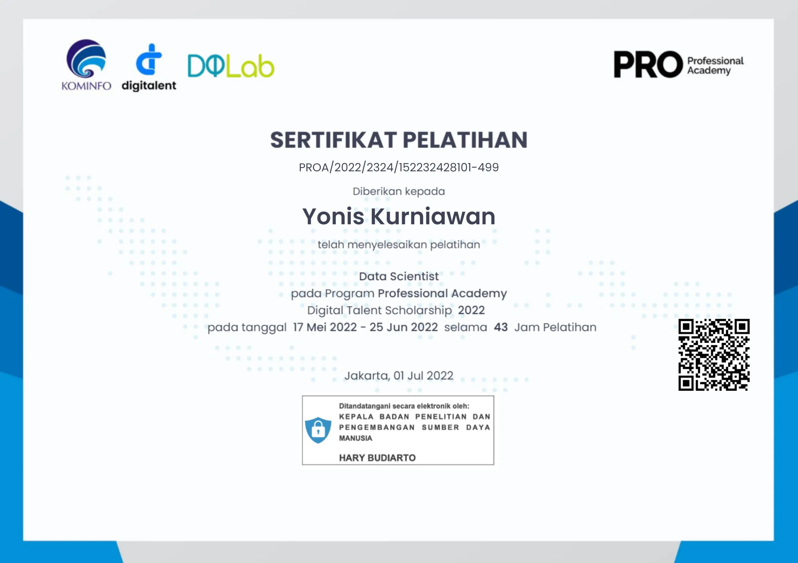
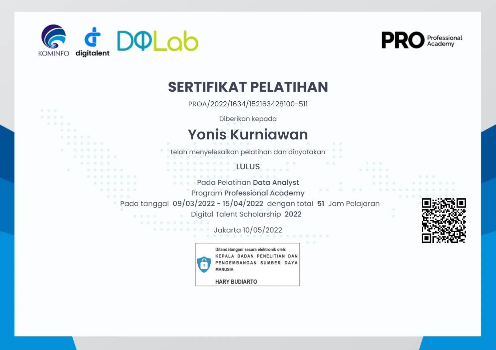
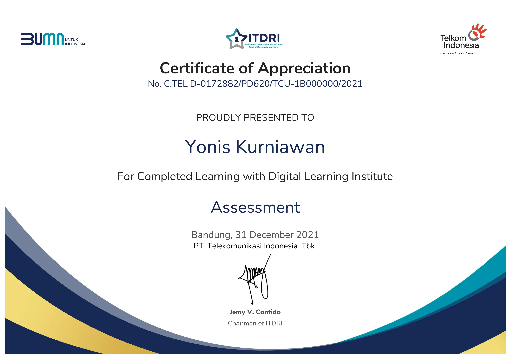

Hello World! I'm Yonis
I'm a $
I'm a $
I graduated from Telecommunication Engineering, PENS and currently work as a software engineer at PT Dirgantara Indonesia, I take pride in my role of contributing to the implementation of the CRM information system and ensuring quick response and customer satisfaction while managing all customer complaints in the database. Additionally, I am passionate about designing and developing web applications and sharing my knowledge and experience with others on software project management and product management. I believe that continuous learning and improvement are vital for personal and professional growth. I am committed to achieving excellence in my field and making a difference in the world through my work.
I believe that technology should improve and simplify people's lives.
Yonis Kurniawan
Business Application Software Engineering - PT Dirgantara Indonesia
Data Management - PT Dirgantara Indonesia
IT Support - PT Panen Lestari Internusa (SOGO Dept. Store)
The most modern and high-quality web design & development is made at a professional level.
Just write and create more awesome content for sharing knowledge.
Web Framework, Python, Machine Learning, AI enthusiast.

Performance of single-RF based MIMO-OFDM 2×2 using Turbo Code.
International Conference on Radar, Antenna, Microwave, Electronics, and Telecommunications (ICRAMET). Date of Conference: 23-24 Oct. 2017. Location: Balai Kartini, Jakarta, Indonesia.
IEEE (Institute of Electrical and Electronics Engineers)

Google Project Management - Digital Talent Scholarship 2023 Ministry of Communications and Informatics Indonesia X Coursera

Product Management - Telkom X Apriary 2023

Data Scientist - Digital Talent Scholarship 2022 Ministry of Communications and Informatics Indonesia

Data Analyst - Digital Talent Scholarship 2022 Ministry of Communications and Informatics Indonesia

PT Telkom Indonesia Tbk - Digital Talent 2022

Python Data Analysis

Python for Data Visualization

SQL Data Reporting and Analysis

Customer Churn Prediction Using ML

Build your ability to compete in Industry 4.0

National Strategy for Artificial Intelligence in Indonesia
{kind=link}
{kind=link}
{kind=link}
{kind=link}
{kind=link}